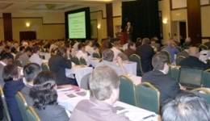
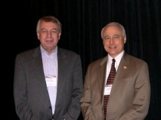
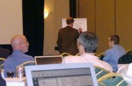
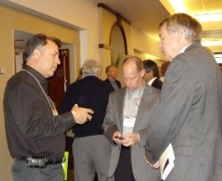

Nearly 200 lighting industry leaders, chip makers, fixture and component manufacturers, and others gathered in Fairfax, Virginia, on April 21 and 22, 2009, for the first-ever DOE Solid-State Lighting (SSL) Manufacturing Workshop, to explore issues related to materials, equipment, process control, and other factors that influence SSL product quality and cost. The underlying purpose of the workshop was to promote excellence in manufacturing and accelerate market introduction of SSL for maximum national energy savings, and to help define a new DOE manufacturing initiative to reduce the cost of light-emitting diode (LED) products to competitive levels, ensure high product quality and consistent performance, accelerate introduction of organic LED (OLED) products, and encourage and strengthen U.S. manufacturing of SSL products.
DOE SSL Portfolio Manager James Brodrick kicked things off on Day 1 by highlighting DOE's active, two-way partnerships with the Next Generation Lighting Industry Alliance, the Illuminating Engineering Society of North America, and the International Association of Lighting Designers. Brodrick provided an overview of DOE's national strategy to move SSL from lab to market, including R&D funding, CALiPER testing of commercially available products, GATEWAY demonstrations, the Quality Advocates initiative, the L Prize competition, and other key strategies.
Next, Fred Welsh of Radcliffe Advisors provided a quick overview of the workshop's objectives and overall process. He explained that Day 1 of the workshop would focus on gaining a better understanding of issues that impact product cost and quality, and that Day 2 would be devoted to making recommendations for near-term activities and a long term plan. The input gathered at the workshop would be used to guide development of a strawman SSL manufacturing roadmap, which will be reviewed and refined at a follow-up workshop in June.
An Overview of SSL Manufacturing
Robert Steele of Strategies Unlimited followed with a keynote talk that emphasized the global nature of the high-brightness LED supply chain. Steele noted that the six-fold market growth that's taken place over the past ten years has been driven by applications other than lighting. He analyzed the industry structure and vertical supply chain for high-brightness LEDs as well as for fixtures, and observed that international patent issues continue to be a contentious area.
Mike Hack of Universal Display Corporation then talked about OLED lighting as the missing element to complete the SSL portfolio. He observed that OLEDs and LEDs are complementary technologies that will each eventually find their own place in the market, with LEDs being used for high-brightness applications and OLEDs for large-area diffuse lighting.
John Dexheimer of First Analysis Private Equity followed with the investor's perspective on SSL manufacturing. Dexheimer examined today's investment trends and explored their implications for SSL. He pointed out that those looking to make a profit might consider the long life of LEDs to be a liability rather than an asset, and he urged those involved in manufacturing to "think outside the box" about the structure of the SSL industry, in order to come up with ways to address that and other hurdles, such as the high initial cost.
LED Issues
The afternoon session of Day 1 was divided into two tracks, one for LEDs and the other for OLEDs. The LED Track presentations were introduced by Steve Bland of SB Consulting, who primed the pump by outlining the workshop's approach to tackling the biggest barriers facing the industry, which included reviewing key elements of the supply chain and value chain and identifying critical manufacturing issues.
He was followed by Stanley Myers of SEMI, who underscored the parallels between the high-brightness LED industry of today and semiconductor manufacturing in the mid-1970s. Myers attributed the drastic reduction in semiconductor cost since then in significant part to the development of manufacturing standards, and urged the SSL industry to follow suit. "The purpose of these standards is to drive down cost," he said.
Jeff Perkins of Yole Développement then took a close look at the technologies and costs involved in LED manufacturing. Perkins identified key metrics and players, detailed the main steps of the LED manufacturing process, and broke down the different elements of the production costs. He highlighted four main trends in the development of new materials, including large diameter, monolithic white LED phosphor-free, AlN native substrates for UV-LED manufacturing, and single GaN substrate.
Next, LED device manufacturing issues were examined by Mike Krames of Philips Lumileds, who focused on what can be done in the near term to reduce manufacturing costs. Krames discussed MOCVD epitaxy as the path to low-cost manufacturing, noting that "the choice of the substrate early on in the process has dramatic effects downstream." He identified thinning and dicing as two critical front-end issues, and packaging, die inspection, and testing as critical issues on the back end.
Paul Pickard of Cree LED Lighting Solutions followed with a look at LED manufacturing issues. Pickard emphasized that in order to make LED products competitive, the payback period should be less than two years. He said the industry should avoid premature standardization and should not skimp on building quality products, but should strive toward smart system-level designs that scale in volume and across platforms.
OLED Concerns
Day 1's OLED Track presentations were introduced by J. Norman Bardsley of Bardsley Consulting, who discussed key issues involved in bringing OLEDs into production and suggested that the group focus on barriers to large-scale OLED manufacturing.
He was followed by Barry Young of the OLED Association, who gave an overview of OLED manufacturing. Young reminded the group that OLED lighting systems should be compared with other luminaires, not with other individual lamps. He compared LED systems with OLEDs by showing CALiPER results for LEDs and also pointed out that some manufacturers do not give warranties for the entire rated lives of LED products. Finally, he described manufacturing challenges for OLED lighting in the areas of luminaire cost, efficacy, and lifetime, as well as the usage of different metrics.
William Feehery of DuPont then explored the manufacturing costs of OLED lighting. Focusing on what might realistically be produced in the near term, Feehery presented a manufacturing cost roadmap for OLEDs, and described other general requirements for low-cost OLED lighting: low-cost substrates, low-cost encapsulation, high efficiency with few OLED layers, solution coating of as many layers as possible, and long-lifetime materials. He stressed that the target is broad adoption in the general market, not a high-end niche product.
The manufacturing implications of OLED architecture were covered by Yuan-Sheng Tyan of Kodak. Yuan-Sheng noted several keys to high performance, including multi-layer structures with tandem architectures, internal extraction enhancement, and hybrid architectures using fluorescent blue with phosphorescent green and red. He described issues that are inherent in OLEDs of today, such as the need for extraction enhancement, the mechanisms that produce infrared loss, and the causes of shorting defects, and he called for improved barrier methods.
Peter Ngai of Acuity Brands Lighting then explored the mainstreaming of OLEDs. Ngai discussed the range of necessary brightness levels and areas that OLEDs could have in order to replace traditional fluorescent ceiling luminaires, and examined issues and features the industry should focus on, such as the production of physically resilient OLEDs with consistent color, dimming capabilities, and a T70 of at least 25,000 hours. He concluded with an overview of the lighting industry's vision for the usage of OLEDs.
Breakout Sessions Provide Input
In the afternoon on both Day 1 and Day 2, attendees divided into breakout groups to brainstorm and identify roadblocks on the path to lower cost, higher quality SSL products, and to make recommendations regarding what should be done, who should do it, and what DOE's role should be.
Harnessing the Global Marketplace
Day 2 of the workshop began with Bob Harmon of Jabil Circuit, Inc., discussing contract manufacturing for SSL. Harmon stated that the advantages of outsourcing manufacturing boil down to reducing costs. "The most important thing is that it allows companies to focus on what they're really good at," he said. Harmon noted that not all SSL manufacturing has to be done overseas; when products are produced in high volume by automation or are very complex and require a high skill level to produce, it makes sense to build them in high-cost regions like the U.S.
More on LEDs
The bulk of Day 2 was split into separate tracks for LEDs and OLEDs. The LED Track began with a presentation on substrates by Keith Evans of Kyma Technologies, Inc. Evans emphasized that substrate matters impact both cost and performance of LEDs, and predicted that the forward trend with substrates will be towards native gallium nitride (GaN), although templates and other approaches may be intermediate solutions. He noted that vertical cooperation within the supply chain could accelerate progress.
Next, Sudhakar Raman of Veeco Instruments, Inc. talked about epiwafer equipment and processing. Raman observed that improvements in epi performance have multiplying effects in the overall cost reduction for LEDs. He noted that significant technology challenges remain in order to increase yield, and predicted that improvements will be achieved through epitaxial growth process, process control, and epitaxial equipment, and that wafer size changes will continue to challenge existing technology to improve uniformity and yield.
Anant Setlur of GE Global Research followed with a discussion of LED phosphor manufacturing issues. Setlur observed that as the LED phosphor field is starting to mature, supporting industries are starting to target LED phosphor applications, and that there are many players filing for international patents on phosphor composition and use in LEDs. He noted that current LED phosphor manufacturing costs are high due to low volumes and/or difficult manufacturing processes, and that inherent efficacy gaps exist for current warm white/high CRI LEDs requiring new phosphor development.
Day 2's LED Track concluded with a presentation on the economics of LED lighting by Eric Haugaard of BetaLED, who focused on the specific question of whether LED product solutions have the potential to more positively impact the environment and the economy than HID-based solutions. Haugaard discussed lower manufacturing process energy consumption for comparable lighting performance, lower transportation resources required, and a smaller carbon footprint as possible current and future benefits of LED over HID. He identified as possible barriers to LED adoption high first cost, long payback period, product warranty shortfall, uncertainty in predicted long-term performance, lumen maintenance, color stability, insufficient or incomplete product performance and reporting standards, and lack of application-level experience and recommended practices.
More on OLEDs

Uwe Hoffmann of Applied Materials kicked off the OLED Track presentations on Day 2. Hoffman focused on the general steps involved with the production of OLED luminaires, and the advantages and disadvantages of different processes. He made the case that a "dry" vacuum process used with small molecule organics is more advantageous than a "wet" solution-based process used with polymers or small molecules in solution, and that linear source is the most advantageous method to use for industrial evaporation.
Anil Duggal of GE Global Research followed with a discussion of roll-to-roll solution processing. Duggal described how the necessity of cost reduction led GE to commit to a roll-to-roll OLED fabrication method, but emphasized that more work is needed before the roll-to-roll product can be brought to market. He concluded that at a large enough plant size, dry-coated product cost could approach wet-coated product cost, and that from a manufacturer's perspective, a wet-coated manufacturing approach is advantageous due to the dramatically lower capital investment required.
The OLED Track concluded with a presentation by Norman Bardsley that focused on the upcoming market need for materials used in OLED lighting. Bardsley made a case that the companies with the highest margins in the OLED display market are those that manufacture the critical materials used in production, and that investing in critical materials for OLED lighting should prove profitable because the materials market could become a $5 billion industry. He discussed many of the critical materials used in the manufacture of OLEDs, including those used for the substrate, substrate coatings, encapsulation technologies, electrodes, luminescent materials, hosts and transport layers, out-coupling enhancement, electrical connections, and drive electronics.
Next Steps
At the end of Day 2, workshop participants returned to the general session room, where each breakout group presented a summary of key recommendations. Brodrick and Welsh concluded the two-day workshop by thanking the participants for their input and recommendations, which will guide development of a strawman SSL manufacturing roadmap. This strawman roadmap will be reviewed and refined at a follow-up DOE SSL Manufacturing Workshop, scheduled for June 24-25 in Vancouver, Washington. More details on the June workshop will be available soon.